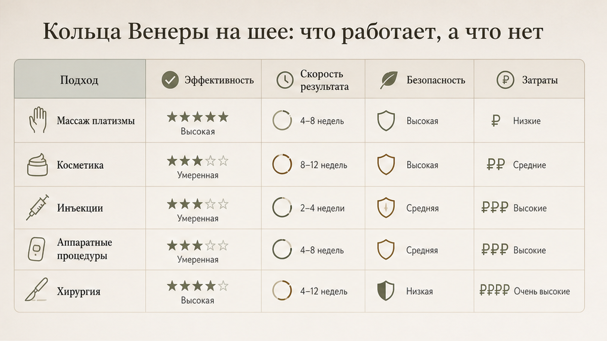
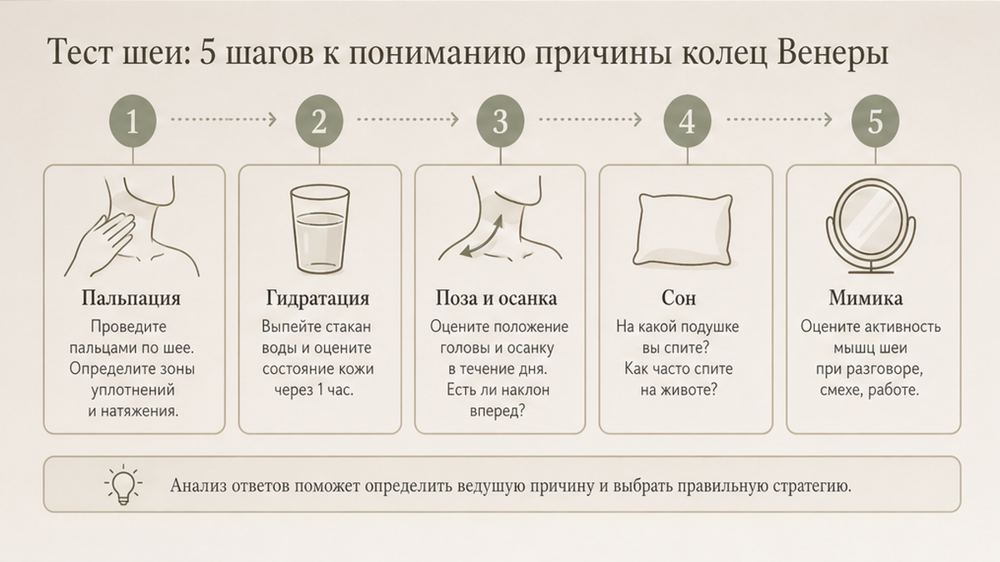
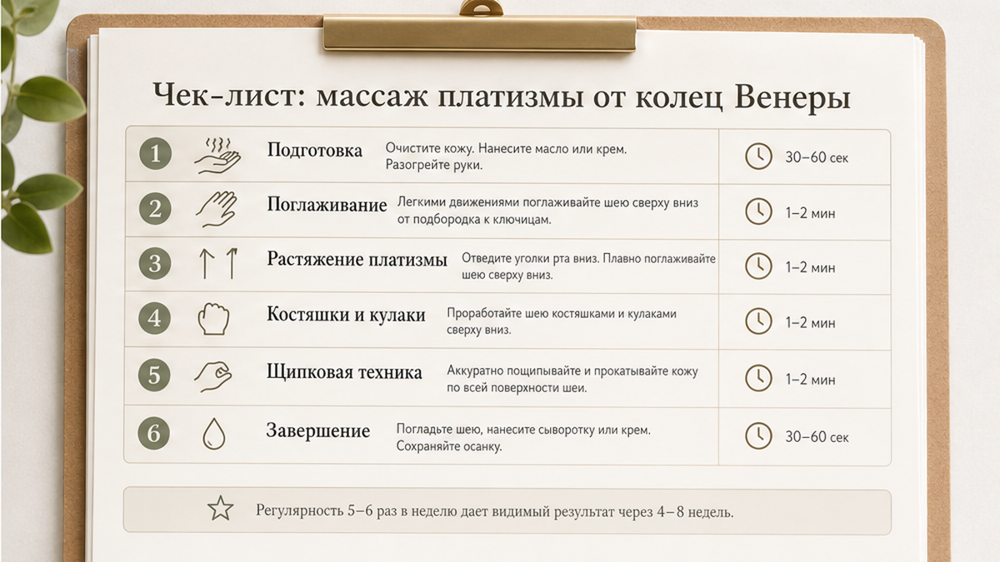

Горизонтальные линии на шее часто появляются не "за одну ночь", а когда кожа пересыхает, солнце бьёт в декольте каждый день, а голова часами смотрит в телефон. Если вы ищете, как смягчить кольца Венеры на шее дома, главное - не тереть шею до красноты, а разобраться: это сухость, зажатая мышца под кожей или обе причины сразу. Ниже - простой тест, мягкий массаж с кремом и короткие упражнения без боли. Без обещаний "новая шея за неделю" и без замены очного осмотра, если есть боль или онемение.
Кольца Венеры - бытовое название горизонтальных складок на передней и боковой шее. Их часто усиливает платизма - широкая поверхностная мышца, которая тянет кожу вниз и вперёд, когда зажата. Домашний протокол: расслабить эту мышцу, напитать кожу, не забывать SPF и поправить привычки с телефоном и подушкой. Давление в массаже - 2-3 из 10. Первые изменения по ощущениям обычно к 3-4 неделе регулярности.
Шея выдаёт возраст раньше лица: здесь кожа тоньше, сальных желёз меньше, а мы часто умываемся "до подбородка" и забываем про солнцезащиту на декольте. Когда ко мне приходит клиентка и говорит "кольца вылезли внезапно", мы почти всегда находим три совпадения: телефон на груди, высокая подушка и крем, который заканчивается на линии подбородка. Дальше - что это за линии, как понять, с чего начать, и пошаговый протокол без агрессии.
"Кольца Венеры" - красивое журнальное имя для горизонтальных морщинок и складок на шее. Это не диагноз и не приговор. Их путают с "шеей смартфона" от постоянного взгляда вниз, но не каждая линия на шее - следствие экрана: часть линий - просто сухая кожа, часть - привычка держать подбородок вперёд.
Платизма - это тонкая "плёнка"-мышца на передней поверхности шеи. Она идёт от груди и ключиц к нижней челюсти. Представьте мягкий лиф, который тянет кожу вниз, если постоянно напряжён. Когда вы говорите с зажатой челюстью, спите с подбородком к груди или нервничаете и "собираете" лицо, на передней шее появляются горизонтальные "дорожки". Они заметнее, если кожа ещё и обезвожена.
Что их усиливает: телефон ниже уровня глаз, две высокие подушки, сухой воздух дома, отсутствие SPF на шее, резкое похудение, курение, жёсткие скрабы, привычка выдвигать подбородок вперёд.
Инъекции и нити на шее - зона врача с показаниями и рисками. Домашний путь другой: не "стирать" линии силой, а перестать их углублять каждый день и поддержать кожу. Медленнее, зато без зависимости от процедур.
Отдельно про возраст: с годами кожа на шее дольше удерживает влагу, но я часто вижу "кольца" у сорокалетних с идеальной умывалкой на лице и сухой шеей. То есть дело не только в цифре в паспорте, а в том, как вы спите, дышите и носите телефон. Если линии есть в 45 - это не повод паниковать и хвататься за агрессивные процедуры. Это повод навести порядок в базовых привычках на 3-4 недели и посмотреть, как отреагирует кожа.
Если параллельно беспокоят линии над губой, загляните в материал про кисетные морщины и уход за зоной рта - шея и периоральная зона часто "схлопываются" от одной осанки и одного пропуска SPF.
Минутный тест экономит недели разочарования. Он показывает, начинать с крема или сразу добавлять работу с мышцей.
Чеклист самопроверки:
Если крем-тест "за сухость" - не лезьте сразу в глубокий массаж. Если линии остаются на увлажнённой коже - подключайте протокол ниже, но без резких запрокидываний головы.
Миниплан на 7 дней: крем на шею после умывания → телефон на уровне глаз → вечерний массаж 5 минут → SPF на декольте днём → неделя без скраба на шее.
Массаж не "стирает" кольца за один вечер, но помогает крему работать и снимает лишний тонус. Работайте на чистой коже с каплей крема - пальцы должны скользить, а не тянуть.
Я беру дневной или ночной крем из линии Моя косметика - текстура скользит, без спирта в первые недели. На всю шею хватит двух горошин: от ключиц вверх, без втирания "до жжения".
Частота: 5 вечеров в неделю, 5-7 минут. Утром - только крем и SPF. После массажа не наносите сразу кислоты на шею.
Частая ошибка - "выдавливать" линии пальцами. На шее мало подкожной подушки, легко оставить синяки. Если покраснение держится дольше получаса - уменьшите давление вдвое.
Ещё один промах - массаж по сухой коже: пальцы цепляют, появляются микротрещины, линии на следующий день заметнее. Всегда скользящий слой крема. И не тяните кожу в стороны "чтобы разгладить" - так вы только растягиваете тонкий слой, а не работаете с мышцей под ним.

Здесь мы не "качаем шею", а учим платизму не тянуть кожу вперёд. Резкие запрокидывания и "утиная губа" с перетяжкой только закрепляют линии.
Частота: через день, лучше днём. Два дня в неделю - только массаж. При острой боли в шее, головокружении или после травмы - сначала врач, не "давить сильнее".
Удобный якорь: каждый раз, когда берёте телефон, - одно "подбородок назад" и поднять экран. Так упражнение встраивается в день без отдельного ритуала на час.

Массаж работает быстрее, когда убираете повторения, которые "рисуют" кольца каждый день.
Миниплан: крем → SPF → телефон на уровне глаз → вечерний массаж → при необходимости крем из Моя косметика.
Если лицо "собрано" от стресса, перед протоколом помогает расслабление лица за 5 минут - шея откликается быстрее, когда челюсть и плечи уже отпустили.

Шея быстро краснеет от перебора активов. Задача - увлажнение и барьер, пока идёт работа с платизмой.
| Ошибка | Что происходит | Как исправить |
|---|---|---|
| Скраб каждый день | Раздражение, линии глубже | Не чаще 1 раза в 7-10 дней, очень мягко |
| Кислоты + массаж в один вечер | Жжение, отёк | Разнести по разным дням |
| Крем только до подбородка | Сухость и "сетка" на шее | Уход на шею и декольте ежедневно |
| Резкие упражнения с запрокидыванием | Боль, зажим сильнее | Мягкие движения, подбородок назад без боли |
| Ждать эффект как у нитей | Разочарование | Цель - смягчить линии, не "новая шея за неделю" |
| SPF только на лицо | Фото-старение шеи | SPF 30+ на шею и декольте |
Подберите текстуру под тип кожи через короткую диагностику - для сухой шеи часто хватает плотного крема без спирта и ежедневного SPF.
На практике я советую начать с одного вечернего блока: массаж плюс одно упражнение "подбородок назад". Когда это в привычке - добавляйте остальное. Так проще не бросить на третий день, когда "не видно чуда".
Если носите парфюм на шее, наносите его на одежду или за ушами, а не на зону "колец" - спирт сушит тонкую кожу.
Зимой шея страдает от воротника и шарфа из синтетики: трение плюс сухой воздух. Под воротник - тонкий слой крема, шарф не затягивайте так, чтобы подбородок постоянно прижимался к груди. Летом - SPF не только на лицо: декольте и боковые поверхности шеи загорают в машине и на прогулке так же активно, как щёки.
Я не против косметологических процедур как инструмента - я против ожидания, что они заменят SPF, осанку и работу с платизмой. Нити и инъекции уместны, когда врач после осмотра считает это безопасным.
Домашний протокол подходит, если вы готовы к 3-4 неделям регулярности и хотите смягчить линии без агрессии. Глубокие стойкие кольца полностью "стереть" дома нереалистично, но их можно сделать менее заметными и не углублять привычками. Раз в неделю - одно фото шеи в профиль при дневном свете: так прогресс виднее, чем в зеркале каждый день.
За ноутбуком поставьте монитор на уровень глаз и каждый час 20 секунд "длины шеи" - это не заменяет вечерний массаж, но снижает дневной зажим. Многие клиентки отмечают, что утренние линии мельчают уже ко второй неделе, когда SPF на шее стал привычкой, а телефон перестал жить на груди.
К врачу - при боли в шее, головокружении после упражнений, онемении рук, резком отёке или если домашние техники вызывают боль. Также - если линии резко углубились за месяц без смены привычек.
Достоверность: рекомендации носят оздоровительно-косметический характер и не заменяют консультацию врача. Решение о процедурах - только с лицензированным специалистом после очного осмотра.
Мелкие линии от сухости и лёгкого тонуса платизмы часто смягчаются за 3-6 недель крема, массажа и упражнений. Глубокие стойкие кольца полностью убрать дома нереалистично, но можно замедлить углубление.
Широкая тонкая мышца на передней шее - от груди к подбородку. Когда зажата, кожа собирается в горизонтальные складки. Мы не "качаем" её, а учим расслабляться.
5 вечеров по 5-7 минут, два дня отдыха. Утром - крем и SPF, без глубокой проработки.
Агрессивная "утиная губа" с перетяжкой может усугубить линии. Мягкое "подбородок назад" и расслабление рта - да, если нет боли.
Нейтральный крем для лица и шеи без спирта. Главное - чтобы пальцы скользили без натяжения.
Кожа "напитана" по ощущениям часто к 10-14 дню. Визуально мелкие линии мягче к 3-4 неделе при SPF и регулярном уходе.
Возраст снижает увлажнение, но телефон, подушка и SPF часто запускают линии раньше "просто годов". Работа с привычками даёт эффект в любом возрасте.
Только после согласования с врачом. При острых болях и головокружении - сначала диагностика.